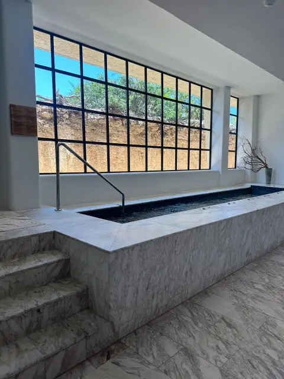
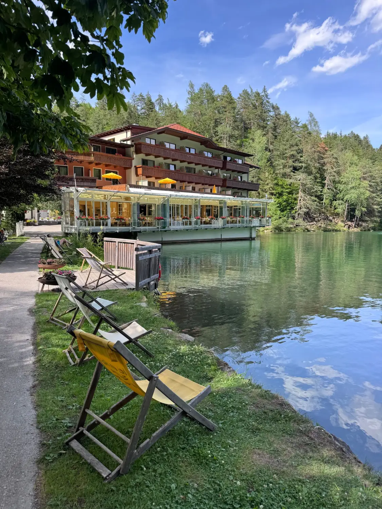
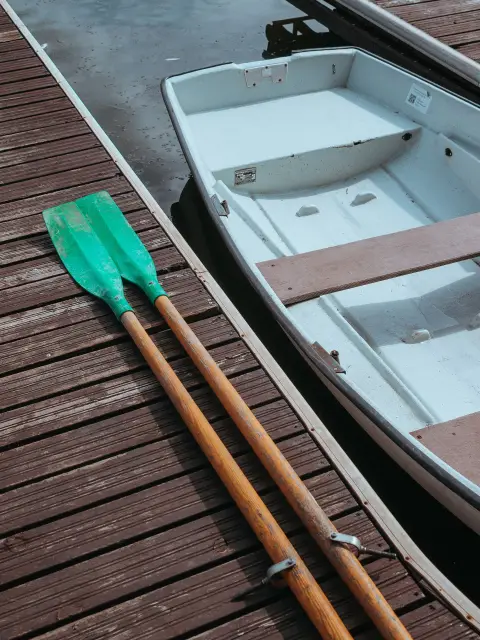
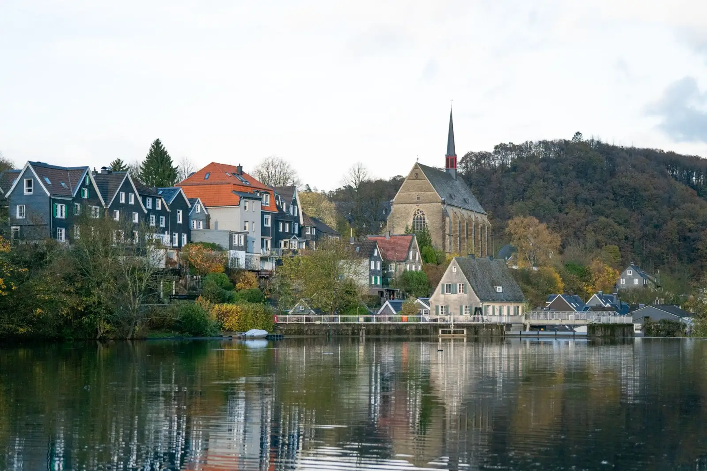
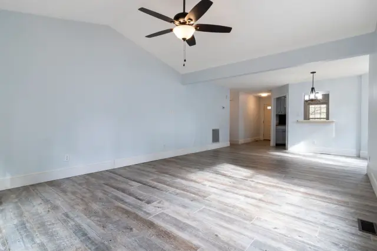
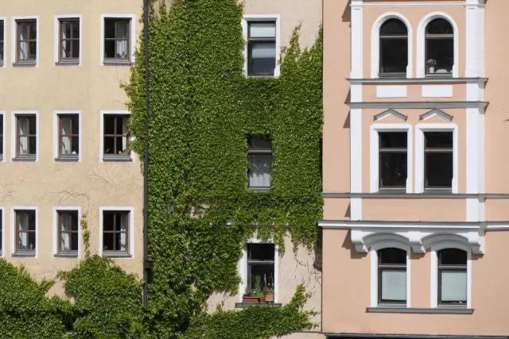
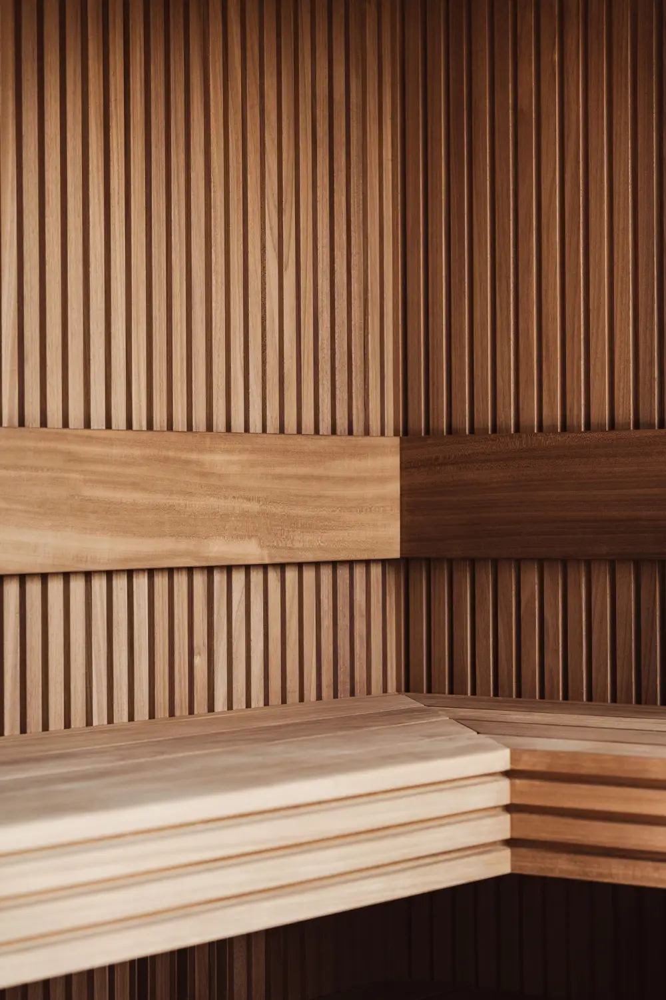

Kapitel 7 von 11
Scroll-Effekte
Alles auf dieser Seite hängt an der Scroll-Position – gerechnet vom Browser über animation-timeline, JavaScript nur als kleiner Helfer für Fokus, Zustand oder ältere Browser. Einfach langsam scrollen; mit dem Inspect-Knopf unten rechts (oder Alt+I) und einem Klick auf einen Block siehst du Markup und Quelldateien. Bei reduzierter Bewegung steht jeder Effekt ruhig und vollständig lesbar da.
Reveal-Formen
Bilder, Karten oder ganze Sektionen öffnen sich beim Hereinscrollen – als Iris, Wischkante, Vorhang oder Zoom. Standardmäßig folgt der Effekt dem Scrollen (zurückscrollen spult zurück); mit --once spielt er einmal ab.
Achtung: --zoom gehört auf einen Wrapper um das Bild, nicht auf das <img> selbst.
Gescrubbt (folgt dem Scrollen)

--circle
--wipe-right
--wipe-left
--wipe-up
--wipe-down
--inset
--split
--diagonal
--zoom (auf dem Wrapper)Einmal-Modus (--once)
--circle --once
--split --once--slide-up --once auf einem PanelWächst zur vollen Fläche (--expand)
Reveal-Pin
Eine gepinnte Bühne: das Bild wächst von einer Karte auf den ganzen Bildschirm, die Überschrift geht, am Ende kommt ein Panel. Reines CSS, ideal als großer Auftakt einer Seite.
Achtung: Mit <video autoplay> statt Bild zusätzlich js/hero-video-motion.js laden – CSS kann ein Video bei reduzierter Bewegung nicht anhalten.
Ein See, der den ganzen Raum nimmt.

Angekommen
Zwei Minuten zu Fuß vom Hotel Seeblick zum Ufer – das Panel erscheint erst, wenn das Bild den Bildschirm füllt.
Morphing
Ein Bild startet in voller Breite, schrumpft beim Scrollen an den Rand und macht Platz für Text, der daneben hereingleitet – reines CSS. --start schickt das Medium nach links, --card und --circle ändern zusätzlich die Form.
Achtung: Den Text kürzer als eine Bildschirmhöhe halten; in schmalen Containern steht das Bild einfach über dem Text.

Standard: ans Ende
Das Haus am See
Zwölf Zimmer im alten Bootshaus, die Liegewiese reicht bis ans Wasser. Zurückscrollen spult den Morph zurück.

--start --card
Morgens am Steg
Das Bild wandert nach links und wird zur Karte mit Schatten – der Text kommt von rechts.
Text-Reveal
Ein großer Satz startet blass und wird beim Lesen hell – Zeile für Zeile oder im Lesefluss, beides ohne JS; Wort für Wort geht mit data-ncss-text-reveal + js/text-reveal.js. Gut für ein Statement zwischen zwei Abschnitten, nicht für Fließtext.
Achtung: --flow braucht den ganzen Text in genau einem <span>.
Zeilen (Standard, ohne JS)
Morgens liegt Nebel über dem Wasser. Wer früh aufsteht, hat den Steg für sich allein – und den ersten Kaffee mit Blick auf die Berge.
Fluss (--flow, ohne JS)
Im Fluss wandert die Helligkeit in Leserichtung über die Zeilen, als wäre der ganze Absatz eine einzige lange Zeile.
Count-up
Kennzahlen zählen hoch, sobald sie ins Bild kommen. Die echte, formatierte Zahl steht im HTML – Screenreader, Suchmaschinen und Kopieren sehen immer den fertigen Wert.
Achtung: Der Zielwert kommt als ganze Zahl in --ncss-count-to; ohne JS fehlen während des Zählens die Tausenderpunkte.
42Zimmer & Suiten
1.200 m²Spa und Ruheräume
98 %würden wiederkommen
1912Gründungsjahr
Laufband (Marquee)
Ein Endlos-Band für Termine, Logos oder Bilder. Es hält bei Hover und Fokus an; für Inhalte mit Aussage gehört ein Pause-Knopf dazu, den das Script verdrahtet.
Achtung: Nur eine Gruppe ins Markup schreiben – js/marquee.js erzeugt die für Screenreader versteckte Kopie.
- Adventsmarkt auf dem Marktplatz
- Gemeinderatssitzung, 19 Uhr
- Laternenlauf am Ufer
- Bürgerbüro bis 18 Uhr geöffnet
- Neujahrsempfang im Rathaus
Horizontal-Scroll
Vertikal scrollen, seitlich fahren: die Reihe gleitet durch eine klebende Bühne. Das Script passt die Strecke an die Reihe an und holt per Tab fokussierte Links ins Bild – probier es mit der Tastatur.
Achtung: Sobald die Reihe Links oder Buttons enthält, ist js/scroll-horizontal.js Pflicht (Fokus sichtbar halten).


Stacked Cards
Eine Bühne bleibt stehen, Karten fahren nacheinander herein und legen sich zu einem gefächerten Stapel. Ohne Unterstützung stehen die Karten einfach untereinander.
Achtung: --ncss-stack-count und jeder --ncss-stack-index werden von Hand gesetzt – CSS zählt die Karten nicht selbst.
Arrangement 1

Seezeit
3 Nächte, Frühstück, Ruderboot für einen Tag – ab 420 €.
Arrangement 2
Spa-Auszeit
2 Nächte, Massage, Sauna und Hallenbad – ab 360 €.
Arrangement 3

Genießer
4 Nächte, Halbpension mit Menü am See – ab 610 €.
Arrangement 4

Winterlicht
2 Nächte zwischen den Jahren, Glühwein am Steg – ab 330 €.
Scrollytelling: <ncss-scrolly>
Text-Schritte neben einer klebenden Bildspalte: der Schritt in der Bildschirmmitte ist aktiv und zeigt sein Bild. Jeder Schritt kann eine Zeitmarke tragen, das Event meldet sie – etwa für ein mitlaufendes Video.
Achtung: Genau eine .ncss-scrolly-figure pro Schritt, in derselben Reihenfolge.
Letztes Event:
1. Ankommen in Seeburg
Das Dorf liegt direkt am Wasser – der Rundgang beginnt am Ufer, wo sich die Häuser im See spiegeln.
2. Das Rathaus
Fachwerk aus dem 17. Jahrhundert, heute Bürgerbüro und Trauzimmer.
3. Kirche am See
Der Turm ist von jedem Punkt des Ufers zu sehen – und im Sommer Treffpunkt für Konzerte.
4. Der Badesteg
Ende des Rundgangs: Schuhe aus, Füße ins Wasser.



Bildsequenz: <ncss-scroll-frames>
72 Einzelbilder auf einem Canvas, passend zur Scroll-Position gezeichnet – spult in jedem Browser butterweich, weil nichts dekodiert werden muss. Geladen wird erst kurz vorher, grob zuerst, dann verfeinert.
Achtung: Das <img> ist Fallback und Alternativtext zugleich – ohne JS, bei reduzierter Bewegung oder Datensparmodus bleibt nur dieses Standbild.

Curtain-Sektionen
Jede Sektion bleibt stehen, die nächste gleitet wie ein Vorhang darüber; --scale lässt die bedeckte zurückweichen, --dim dunkelt sie ab. Auch überlange Sektionen zeigen erst ihren ganzen Inhalt.
Achtung: Jede Sektion braucht einen blickdichten Hintergrund, z. B. eine .ncss-surface--*-Klasse direkt darauf.
Gemeinde Seeburg
Frühling am Ufer
Weiterscrollen – die nächste Jahreszeit schiebt sich darüber.
Sommer am Badesteg
Der Steg ist ab Juni täglich von 7 bis 21 Uhr offen, die Badeaufsicht sitzt am Wochenende im Häuschen.
Winter auf dem Marktplatz
Die letzte Sektion wird nie bedeckt – hier endet der Vorhang.
Roadmap (selbstzeichnende Zeitleiste)
Meilensteine an einer Linie, deren farbiger Teil sich beim Scrollen nachzeichnet – der graue Track zeigt dabei, wie weit es noch ist. Ohne Unterstützung ist die Linie einfach fertig gezeichnet.
Neue Seepromenade Seeburg
-
Bürgerwerkstatt
Drei Abende im Rathaus, 140 Ideen auf Zetteln und Karten.
-
Entwurf beschlossen
Der Gemeinderat wählt den Entwurf mit Holzdeck und neuen Bänken.
-
Bauarbeiten am Ufer
Abschnitt zwischen Bootshafen und Badesteg, Umleitung über die Seestraße.
-
Eröffnungsfest
Mit Musikverein, Fischbrötchen und der ersten Bootsfahrt der Saison.
Lesefortschritt
Schau nach ganz oben und an den rechten Rand: beide Balken zeigen, wie weit du auf dieser Seite bist – ein leeres <div>, eine Scroll-Timeline, kein Scroll-Listener. Farbe kommt aus den Flächen-Helfern, etwa .ncss-gradient-brand.
Achtung: Der Balken liegt mit z-index 1000 über allem – eigene klebende Kopfleisten darunter einplanen.
Scroll-Snap & Sticky
Die Mechanik-Helfer unter allen Effekten: einrastende Reihen für Galerien, Vollbild-Sektionen, die Sektion für Sektion einrasten, und klebende Kopf- oder Fußzeilen in einer Scroll-Box. Komplett ohne JS.
Achtung: .ncss-snap-sections ist eigentlich bildschirmhoch – hier zum Ausprobieren in einer 22rem hohen Box.
Einrastende Reihe (.ncss-scroll-snap-x)




Vollbild-Sektionen, eingebettet (.ncss-snap-sections)
1 · Lage
Ruhige Seitenstraße, Bäcker und Bus in fünf Minuten.
2 · Wohnung
78 m², drei Zimmer, Südbalkon, Dielenboden.
3 · Besichtigung
Samstags 10 bis 12 Uhr, ohne Anmeldung.
Klebend in einer Box (.ncss-sticky)
Wochenprogramm
- MoYoga am Steg, 7:30 Uhr
- DiKräuterwanderung mit der Gärtnerin
- MiRuderboot-Kurs für Anfänger
- DoSaunaabend mit Aufguss
- FrFischmenü auf der Terrasse
- SaWochenmarkt in Seeburg
- SoLanges Frühstück bis 12 Uhr
- täglichFahrradverleih an der Rezeption
- täglichHallenbad 7 bis 22 Uhr
Anmeldung an der Rezeption
Animations-Helfer
Kleine, fertige Bewegungen statt einer Animations-Bibliothek: Einblenden beim Einfügen, Endlos-Schleifen für Ladezustand und Aufmerksamkeit, Mikro-Interaktionen bei Hover und Klick. Alle laufen über die Motion-Tokens und schweigen bei reduzierter Bewegung.
Achtung: .ncss-animate-shake braucht einen Auslöser – Klasse setzen, nach animationend wieder entfernen.
Einblenden
fade-in
scale-in
Schleifen: Laden & Aufmerksamkeit
.ncss-animate-spinLive vom Steg
.ncss-animate-pulse.ncss-skeleton
Abgelaufen – zum Testen prüfen.
.ncss-animate-shake
.ncss-glow-border.ncss-glow-pulseMikro-Interaktionen (Hover, Klicken und Halten)
Weitere: .ncss-transition, -slow, -transform und .ncss-gpu-boost gegen Ruckeln bei teuren Repaints (nur gezielt einsetzen) – Mikro-Interaktionen im Handbuch.
View Transitions
Das Akkordeon wechselt sein Bild nativ per :has(); js/view-transitions.js macht daraus einen weichen Übergang – hier mit data-transition="slide". Für weiche Wechsel zwischen ganzen Seiten gibt es das reine CSS-Opt-in page-transitions.css, das Quell- und Zielseite laden müssen.
Achtung: View Transitions reagieren nicht von selbst auf reduzierte Bewegung – die NativeCSS-Dateien prüfen das deshalb selbst.
Hallenbad
Marmorbecken mit Sprossenfenstern zum Park, 29 Grad Wasser, täglich 7 bis 22 Uhr.
Sauna
Finnische Holzsauna mit Aufgüssen am Abend, danach direkt in den See.
Ruheraum
Liegen mit Decken, Tee und Blick ins Grüne – Handys bleiben draußen.

